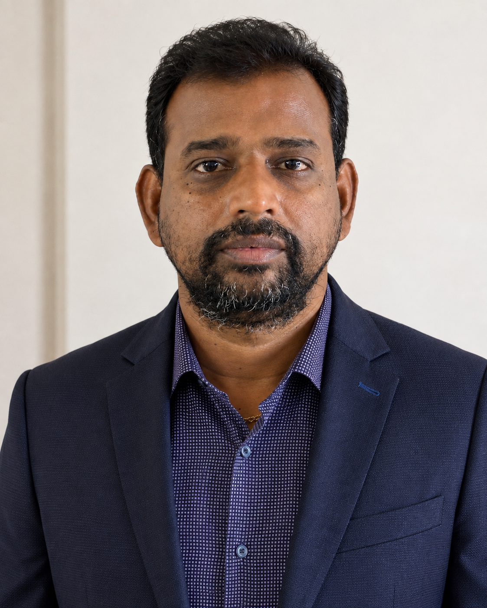
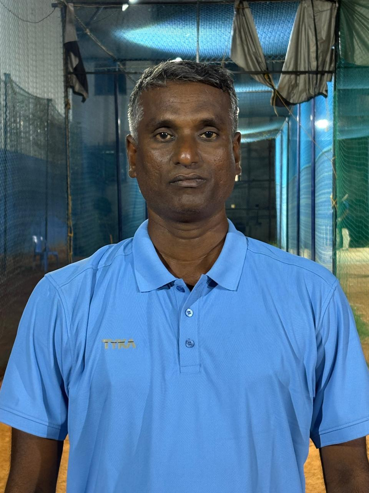
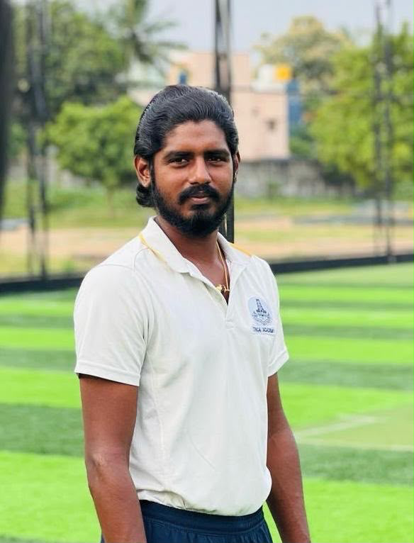
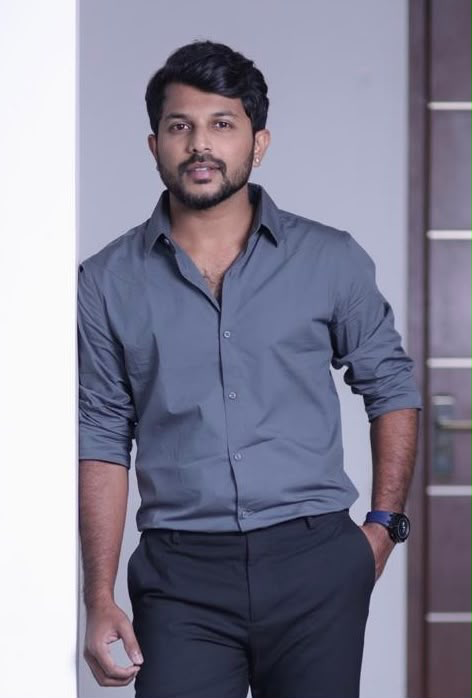

Founder & Chairman
Dinesh Devadoss
Dallas, Texas, USAView Profile →
Technical Director
Senthil Narayanan
Kingstar Academy · ChennaiView Profile →
Senior Coach · Player Development
Ranjith Janagiraman
Kingstar Academy · ChennaiView Profile →
Senior Coach · Tournament Administration